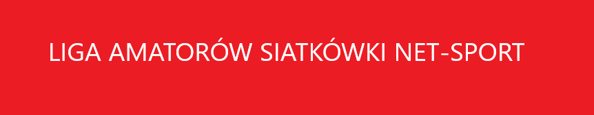

APTIV – MISTRZ 16 EDYCJI
Opublikowano 1 lutego 2021 pzez Net-sport
DRUŻYNA “B” – II miejsce
LOTNICY – III miejsce
W CO GRAMY? – IV miejsce
Dziękujemy Wszystkim drużyną za udział i zapraszamy do następnej edycji.
Najbliższe mecze:
24.04.2021 | 16:00
Wisła
VS
Cracovia
25.04.2021 | 19:00
Węgiel
VS
Zaksa